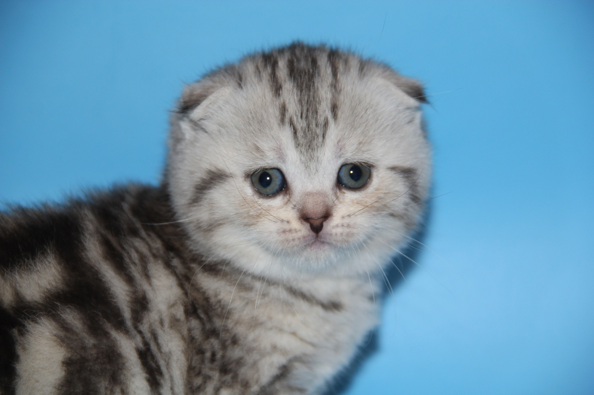

Меня зовут Карлосон Макс, который живет на крыше в Самаре и учюсь в школе Samara Nashional Research University. Мне нравится танцевать и воображать, а еще я пишу точки в конце предложений. Интересный факт: я умею красиво падать.
Вы можете связаться со мной через Вконтакте или Telegram.
Это моя фотография это реально я.
Это текст с другим шрифтом.
| Имя | Возраст |
|---|---|
| Макс | 19 |